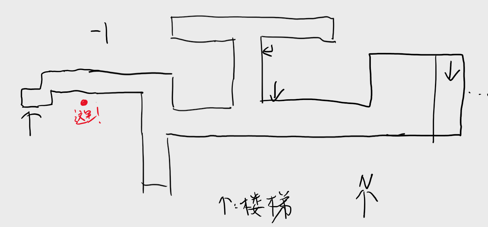

对，还要强行宣传一下 SubIT 社团！
我们是2018年12月建立的技术支持社团，下属于博雅学院。我们的邮箱是 subit@i.pkuschool.edu.cn，官网是 pkuschool.github.io/SubIT。
有什么 Office 365 方面的疑问可以随时发邮件 / Yammer 抄送寻问我们。
我们也提供线下技术支持服务。您可以在下方位置（需要登录 Office 365账号）预约时间后，在指定时间前往西楼 地下一层 B024 接受答疑，我们将竭诚为您服务。
如果对路途不太熟悉，可以参考这张手绘图：
